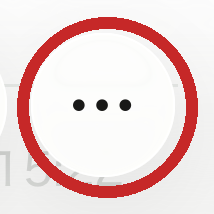
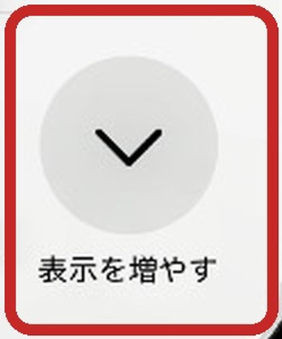
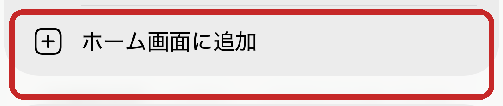
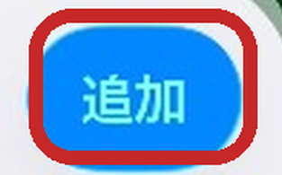
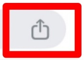
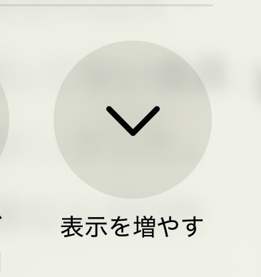
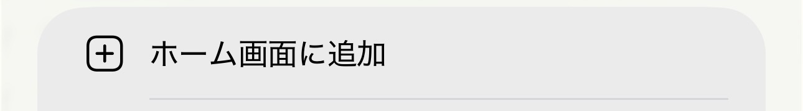

「ホーム画面に追加」を、
迷わせずに終わらせる部品。
iOSでWebアプリをホーム画面に置いてもらう案内を、実機テストと失敗の記録ごと部品化しました。 高齢者・スマホに不慣れな人でも、説明者なしで自力でたどり着けます。
背景なぜPWAという選択なのか
「ホーム画面に追加」の作り込みに入る前に、そもそもPWA（ホーム画面に追加して使うWebアプリ） という選択自体にどんな意味があるかを書いておきます。
メリット
- 審査・登録料が不要。App Store / Google Playへの年間登録料や審査、更新のたびの再審査なしで配布できます
- iOS/Androidを同時に展開できる。ネイティブアプリのように2つ作り分ける必要がありません
- 通知が出せる。バッジ表示もできる。ホーム画面のアイコンに未読件数を出したり、Web Pushで通知を送れます
- 0円から始められる。Cloudflareなどのホスティングを使えば、月額のサーバー費用なしで公開できます
デメリット・課題
- 通知には「ホーム画面に追加」が必須です。ブラウザで見てもらうだけでは、通知の許可を求めること自体ができません。この一手間を越えないと、PWAの利点は使えないままです
- その「ホーム画面に追加」自体が、スマホに不慣れな人には難しい。ここが、このプロジェクトの本題です
正体Webアプリを、かんたんにアプリ化するためのプログラム
かんたんに言うと、Webアプリをスマホにアプリとして入れてもらうための、 導入専用プログラム（ティーザープログラム）です。上のデメリットの 「ホーム画面に追加が難しい」を解決するために作りました。
- ブラウザを自動判別。iOSのSafari/Chromeを見分けて、そのブラウザに合った手順を出します
- OSを自動判別。iOS/Androidを見分けて、それぞれのやり方を出します
- 言語を自動判別。端末の言語設定を見て、表示する言語を自動で切り替えます
- 一度入れたら、二度と出てきません。インストール後は案内そのものを表示しない設計です
用途こんなときに
-
通知を出したいアプリを、格安で運用したいとき
- 会員向け通知システム
- 町内会・自治会の回覧システム（実例: kairanban-app）
- 社内・グループ向けの共有システム
- Apple/Googleの審査基準に合わない内容を、Webアプリとして配布したいとき
問題なぜ普通のマニュアルは失敗するのか
iOSでは、Webアプリをホーム画面に置く操作をアプリ側から自動化できません。 利用者が自分で「共有 → ホーム画面に追加 → 追加」を辿るしかありません。ところが、
- 操作を始めると、OSの共有シートがページを覆います（＝説明が見えなくなる）
- 高齢者は「見たものを覚えて操作する」ことができません（作業記憶が1動作しか保たない）
この2つが重なるため、写真を並べただけの案内は紙面の出来と無関係に必ず失敗します。 この部品は、その失敗を実機で10回以上繰り返して見つけた解き方を、そのままコード化したものです。
実測実機で確かめた10の事実
検証環境: iPhone 17e / iPhone SE 第3世代（シミュレータ）＋ iPhone 15 Pro Max（実機）
| # | 調べたこと | 結果 |
|---|---|---|
| 1 | 共有シート表示中、ページはどこまで見えるか | 画面の上から42.7%は覆われない |
| 2 | 共有シート表示中、JSは動くか | 動く（開いたまま秒カウンタが進み続けた） |
| 3 | シートの開閉をページが検知できるか | できない（blur/focus/visibilitychange 等いずれも発火せず） |
| 4 | <title> は共有シートに出るか | 出る（ただし document.title と og:title の両方が必要） |
| 5 | navigator.share()でワンボタン設置できるか | 不可。開いたシートに「ホーム画面に追加」が無い |
| 6 | 共有シートの題名は何文字入るか | 約16文字。超えると末尾が「…」に切れる |
| 7 | 「追加済みか」をブラウザから判定できるか | できない。Safariとホーム画面アプリは保存領域が別 |
| 8 | Safari以外から追加できるか | iOS 16.4以降のみ。16.3以前はSafari限定 |
実物同梱している写真
iOSのシステム画面なので、どのアプリでも同じものが出ます。赤枠は自動検出で切り出し済み。撮り直し不要です。
iOS Safari（帯は上）




iOS Chrome（帯は下・4手順）



原則守らないと通じない5つ
- 記憶ゼロ。手順を自動で送らない。全手順を常時ぜんぶ出し、利用者は自分の画面と見比べるだけ
- 帯は共有ボタンと反対側。Safari（共有は下）→帯は上／Chrome（共有は上）→帯は下
- 全面を1色で塗らない。iOSはページ端の色をブラウザのバーに反映するため、共有ボタンが同化して消える
- 共有シートの題名は document.title と og:title の両方を書き換える。片方だけだと元の題名が出た事故あり
- その題名は15文字以内。超えると「…」で切れる（実機で2回確認）
ここに書いた数字と原則は、遠回りして見つけたものです。実装だけコピーして根拠を捨てると、 同じ場所でまた失敗します。組み込むときは README を先に読んでください。
対応出し分けの一覧
| 端末・環境 | 出るもの |
|---|---|
| iOS Safari | 帯は上・5手順 |
| iOS Chrome（16.4以降） | 帯は下・4手順・上向き矢印 |
| iOS Chrome（16.3以前） | Safari誘導（16.3以前はSafari限定のため） |
| LINE等のアプリ内ブラウザ | Safariアイコン＋脱出ボタン |
| ホーム画面から起動 | 「設定できました」→通知の許可の案内 |
| Android | oneTapAvailableのときだけ1タップ設置ボタン |
| パソコン | 何も出さない |
リファレンス実装はReact（src/InstallGuide.tsx）ですが、判定ロジック・文言・配色・制約は
フレームワーク非依存です。実際にAstro/vanilla構成に移植して本番投入した実績があります。
React以外の構成なら、同じ判定・同じ文言・同じ配色・同じ制約で作り直してください。